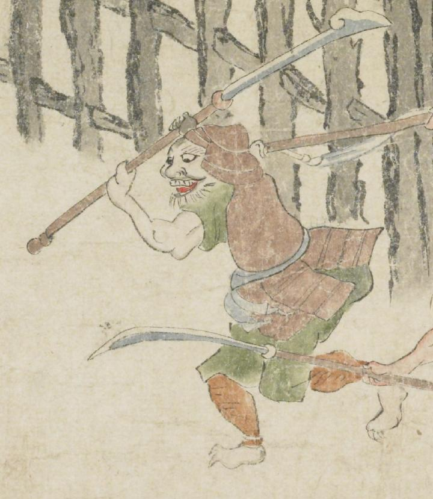

甲冑を身につけた鬼。目玉が大きく、上顎の歯をむき出しにする。顎ひげを生やしている。緑色の着物の上に茶色い鎧を着けている。両腕で薙刀状のものを振り上げ、左側に向って走っている。
著作者：坂本弥一郎徳定／出典：親書誌：U426_nichibunken_0080：伊吹山酒呑童子絵巻；イブキヤマシュテンドウジエマキ／日付：2007／資源識別子：U426_nichibunken_0080_0013_0012
Copyright (c)2010- International Research Center for Japanese Studies, Kyoto, Japan. All rights reserved.